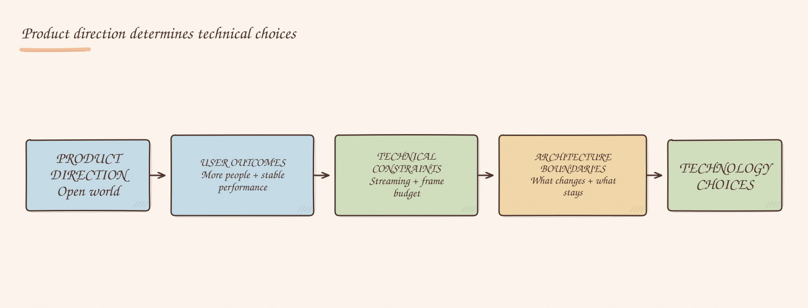

Engineering teams love talking about technology. I have been in plenty of discussions about rewrites, microservices, frameworks and whether we should build something ourselves.
Those discussions matter, but many of them start too late in the reasoning. The strongest technical decisions I have seen began with a clear product direction. Once that direction was explicit, the technology choices became easier; without it, teams could spend months debating solutions without agreeing on the problem.
The rebuild of Decentraland's client made this clear to me. From the outside, it looked like a large technology project, but we were not searching for a fashionable new stack. The legacy path was already Unity-based. Years of technical debt and the web delivery model could no longer support the product direction: an open world with more people, more avatars and longer sightlines.
We needed an architecture that made that product direction realistic.
The user outcomes were concrete:
Once we defined those outcomes, it became clearer which parts were worth replacing and which were worth keeping. The technology followed the strategy.

Now, when a discussion narrows too early to tools, frameworks or architecture, I step back and ask:
What are we actually trying to achieve?
The answer usually tells us more than another architecture diagram.